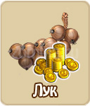

Получено: файл; исходный URL. Исходный файл из каталога задания; авторство изображения отдельно не установлено. Страница: источник.

Лук
ВКонтакте; дата публикации и редакции не установлена- Тип
- Квест или линейка
- Версия и дата
- ВКонтакте; дата публикации и редакции не установлена
Данные по источнику · ВКонтакте, ZOMBIA · дата публикации и редакции не установлена
Предварительно: Содержимое списка; цели, диалоги и награды приведены в том виде, как опубликованы. Отдельная страница не обязательно проверена. Версия и дата требуют сверки.. Требуется сверка.
- Текст карточки на странице каталога
- Описание квеста: Но в остальном Алмазная девочка была самой обычной девочкой. Ц ели квеста: 1. Сделай в Шкатулке второй этаж Песочной башни ; Количество: 1 2. Лук не любит Алмазная девочка – скорее продай его ; Количество: 120 3. Удобри свои фруктовые деревья. Количество: 50 Награды: 10 + 10 + 10
Данные по источнику · браузерная версия ВКонтакте; редакция неизвестна · 22.06.2013 — публикация, дата редакции неизвестна
Предварительно: Прочитана отдельная фанатская страница; подписи наград отсутствуют. Названия по файлам — лишь предположения.. Требуется сверка.
- Линейка
- Алмазная девочка; позиция 4 из 15 по оглавлению ZOMBIA. Порядок разблокировки не проверен.
- Описание квеста — полный текст страницы
- Но в остальном Алмазная девочка была самой обычной девочкой.
- Цели
- Сделай в Шкатулке второй этаж Песочной башни — 1; продай лук — 120; удобри свои фруктовые деревья — 50.
- Награда — исходные обозначения
- По 10 пиктограмм pljush.jpg, svet.jpg, teplo.jpg; предположительно плюш, свет и тепло, нужна проверка.
- Диалоги NPC
- Отдельного диалога NPC на странице нет; описание не следует считать полным игровым диалогом.
Связанные сущности
- Твёрдость — предыдущее в списке линейки
- Жизнь девочки — следующее в списке линейки
- Полное прохождение квестовой цепочки "Алмазная девочка" — оглавление линейки
- Полное прохождение квестовой цепочки "Алмазная девочка" — задание в оглавлении: 4
- Жизнь девочки — предыдущее в списке линейки
- Твёрдость — следующее в списке линейки